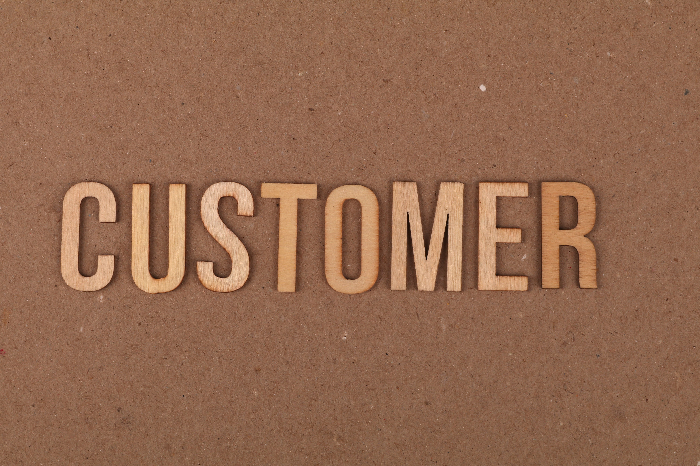
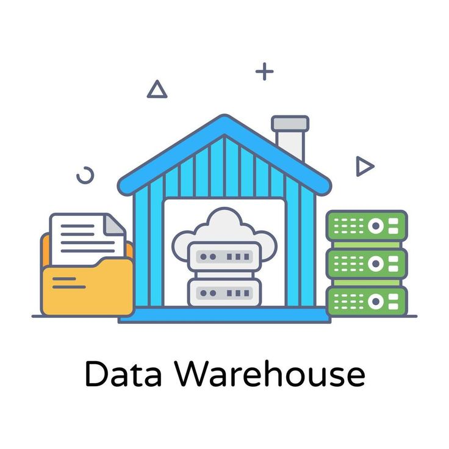
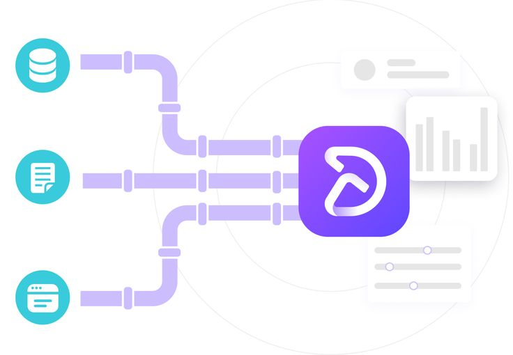
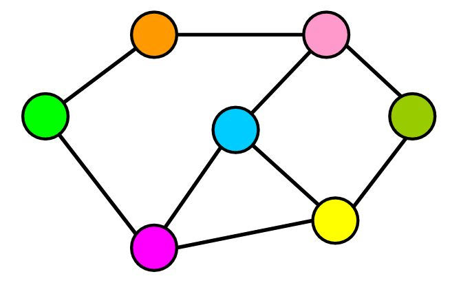
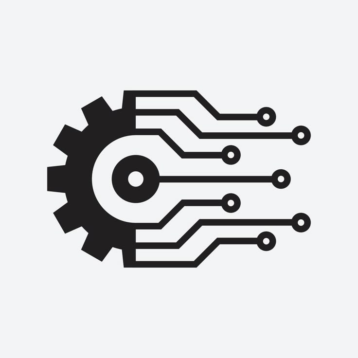
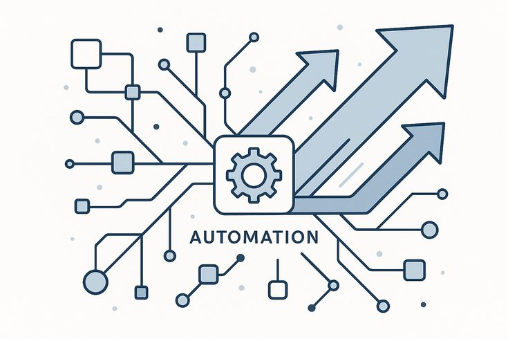

Helping organisations transform raw data into strategic decisions, build scalable analytics infrastructure, and automate high-value business processes using AI.
Not just reports and dashboards, measurable business outcomes that improve how your organisation makes decisions.
Replace gut-feel with dashboards and models that give your leadership team a single source of truth,updated in real time.
Manual, repetitive workflows automated with AI ,from lead follow-up to executive report generation so your team focuses on work that matters.
Board-ready, clean, and narrative-driven dashboards that communicate performance at a glance without requiring a data team to interpret them.
Data pipelines and warehouses built to grow with your business — modelled correctly from day one, reducing technical debt and rework.
Identify where your operations lose time and money through data. Turn those findings into process improvements with a clear ROI.
Analysis delivered with clear business interpretation not raw numbers, but the "so what" that drives better strategy and prioritisation.
I'm a Business Intelligence Consultant, Analytics Engineer, and AI Automation Specialist who bridges the gap between raw data and real business value.
Over the past several years, I've worked across industries - helping organisations design data infrastructure that scales, build reporting systems that leaders actually use, and automate the processes that drain teams of productive time. My work sits at the intersection of business analysis, data engineering, and applied AI — a combination that lets me deliver solutions that are both technically robust and commercially meaningful.
I don't just hand over a dashboard and leave. I engage as a strategic partner understanding your business objectives first, then building solutions designed to move the needle on them.
Three integrated practices. Each one designed to deliver a concrete business outcome.
Turn your business data into strategic intelligence. I design dashboards and reporting systems that give decision-makers the clarity they need fast.
Build the foundation that makes all your analytics reliable, scalable, and consistent. Clean data in, trustworthy insights out.
Deploy AI where it creates the most leverage: automating workflows, qualifying leads, generating reports, and building intelligent assistants.
A clear, structured approach that respects your time and delivers results you can measure.
We align on your business objective, current data state, and what success looks like. No jargon — just strategic clarity.
You receive a clear scope of work with defined deliverables, timeline, and pricing. No ambiguity, no scope creep.
I build in structured sprints with regular check-ins so you see progress and provide input throughout — not just at the end.
Full documentation, training for your team, and a defined support window to ensure adoption and lasting value.
Production-grade technologies proven in real-world client engagements and business environments.
Each project below represents a real business challenge solved — click to read the full case study.
A comprehensive analysis of the phone loan portfolio, providing insights into default risks, customer behavior, and profitability.

Customer churn analysis and segmentation model enabling proactive retention campaigns and improved visibility into revenue at risk.
Implemented a SQL-powered fraud detection system with automated risk rules and Power BI monitoring, providing real-time visibility into suspicious transaction patterns and anomalies.

End-to-end SQL data warehouse design for a multi-departmental organisation, consolidating 2 source systems with 6 different data information sources.

Designed and deployed a modern ELT pipeline replacing a fragile legacy ETL system improving data freshness from daily to near real-time.

dbt-based semantic layer unifying sales, finance, and product data into consistent, documented business metrics.

n8n-based automation that researches, qualifies, and sequences outreach to leads, running 24/7 without human intervention.

AI agent that pulls data from multiple sources, generates narrative commentary, and delivers a formatted executive brief every Monday morning.
LangChain-based AI assistant handling tier-1 support queries with escalation logic reducing support team workload by over 60%.
Outcomes described in the words of the people who experienced them.
Ezra built dashboards our leadership team uses in every weekly review. Before, we were pulling numbers manually from three different systems. Now it's one screen and the conversation moves faster.
What I appreciated most was that Ezra came in asking business questions, not just technical ones. The output was built around our actual decisions, not just data outputs.
The fraud detection system flagged patterns our existing controls completely missed. That alone justified the entire engagement — the 344 flagged cases were the first hard evidence we had of organised device-sharing abuse.
If you're looking to improve how your business uses data, automate time-consuming processes, or build analytics infrastructure that scales, I'd like to hear what you're working on.